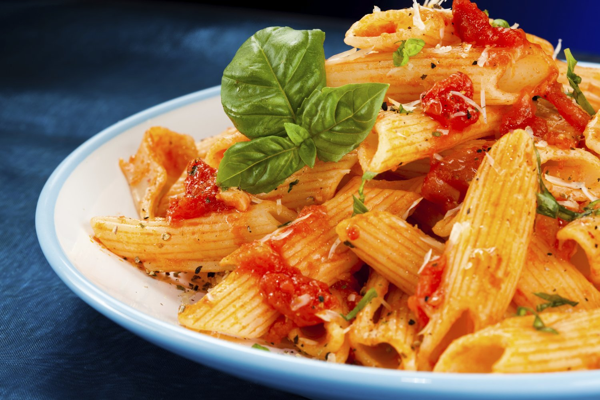

Creamy Chicken Penne Pasta
INGRIDIENTS
- 4 slices bacon
- 2 chicken breasts sliced
- salt to taste
- pepper to taste
- 2 teaspoons italian seasoning
- 1 teaspoon paprika
- 2 cloves garlic , minced
- 2 cups spinach(80gm)
- 4 small tamatoes,diced
- 1 1/2 cups cream(360mL)
- 1 cup shredded paramesan chesse(100g)
- 1/2 teaspoon red pepper flakes,plus more for garnish
- 10 oz penne pasta(258g),cooked until aldente
- 3 tablespoon Chopped fresh parsely for garnish
PREPARATION
- In a deep skillet fry the bacon until crispy. Remove to a papper towel to drain ,then chop
- In the same skillet,add the chicken and season with salt,papper,italian seasoning and paprika . Cook until no longer pink inside
- Add the garlic and cook until softended .
- Add spinach and tomatoes and cook until the spinach is wilted
- Add the cream ,paramesan ,an red papper flakes and bring to a boil
- Add the penne and bacon and stir until fully coated in sauce.
- Serve with parsley , oaramesan and red pepper flakes if desired
- Enjoy!